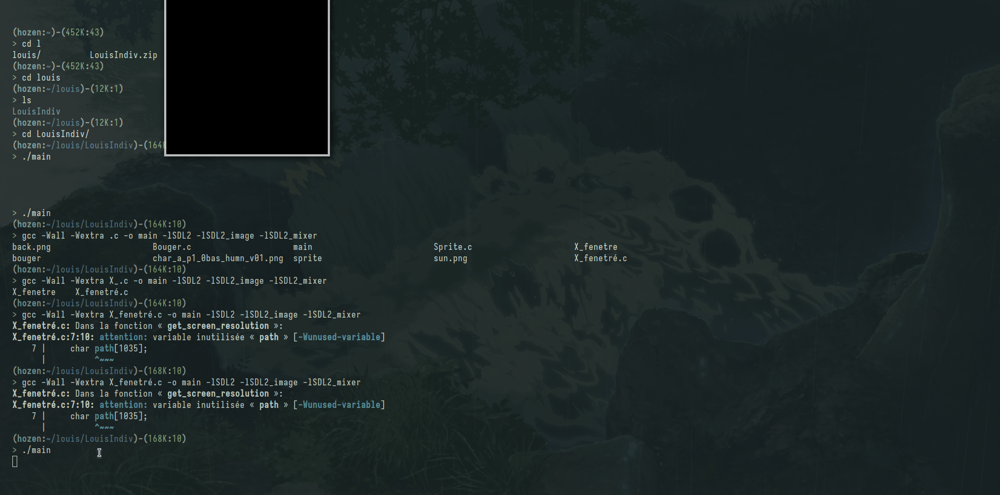
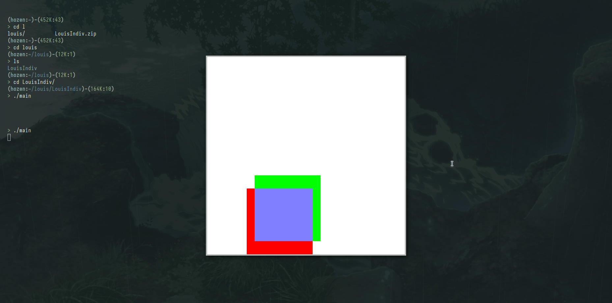
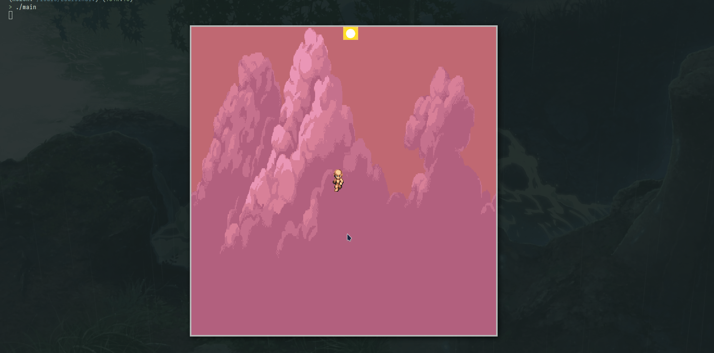
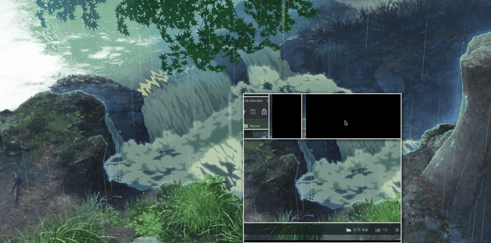
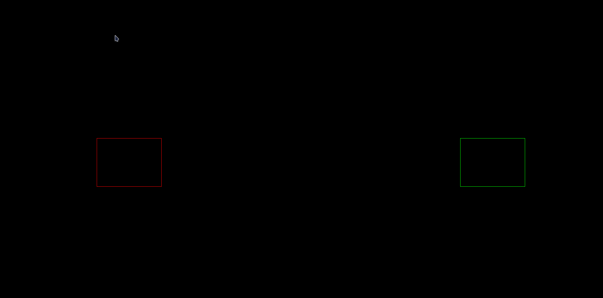
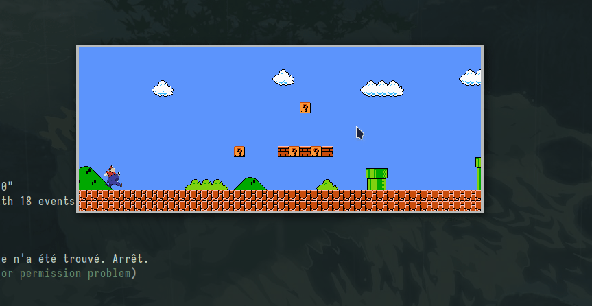
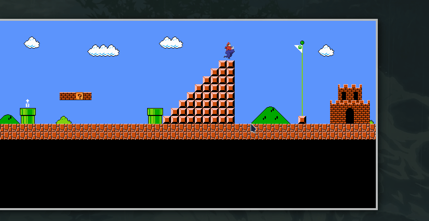
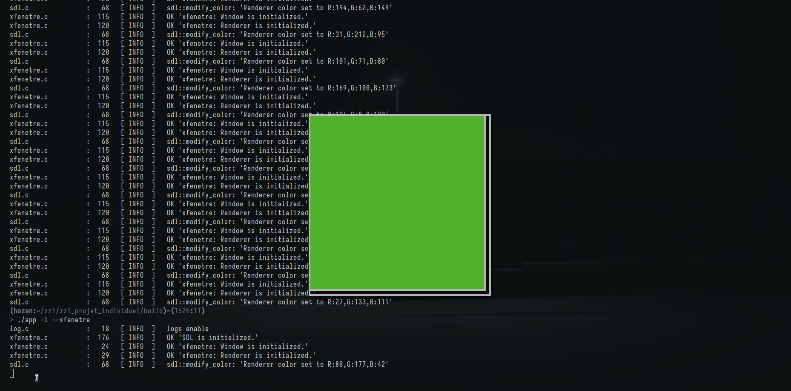
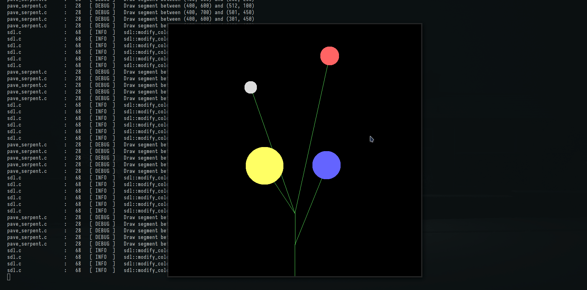
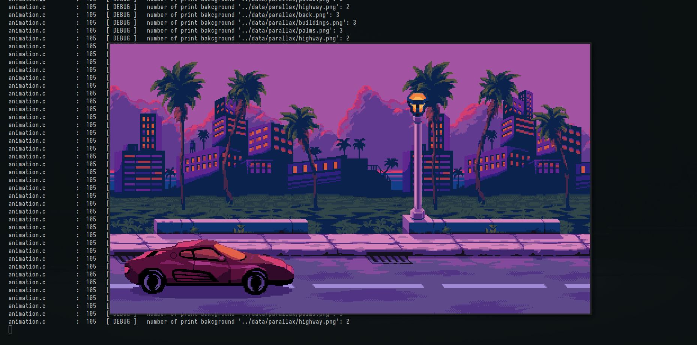

ZZ1 SEMAINE 1
Table des matières
1. Projet Individuel
1.1. Louis
1.1.1. Z Fenetre

1.1.2. Carré Fusion

1.1.3. Sprite

1.2. Thibault
1.2.1. Fenetre Piège

1.2.2. Rectangle Latéraux Fusion

1.2.3. Super Mario Frod


1.3. Enzo
1.3.1. Explosion

1.3.2. Simulation Vent

1.3.3. Parallax + animation voiture

2. Problemes du Voyageur
2.1. Présentation
L'énoncé du problème du voyageur de commerce est le suivant : étant donné n villes et les distances entre toutes les paires de villes, trouver un chemin de longueur totale minimale qui passe exactement une fois par chaque ville et revienne à la ville de départ.
2.2. Floyd Warshall
Sortie : matrice, des plus courtes distances Entrée : graph, graph qui contient les points et distances initialisées Var : matrice, des plus courtes distances Initialisation matrice = +∞ FONCTION floyd_warshall (graph) | allocation de la matrice | initialisation de celle ci avec les distances des arcs existants | | POUR k de 0 a la taille de la matrice FAIRE: | | POUR chaque cellule de la matrice FAIRE: | | | SI le chemin passant par k entre les deux coefs de la matrice est plus court que celui stocké ALORS | | | | On met a jour la distance avec celle de ce nouveau chemin | | | FSI | | FAIT | FAIT | | retourner matrice FIN
2.3. GLOUTON EXHAUSTIVE
Principe: Prendre le meilleur à chaque itération
Sortie : distance euclidienne cycle minimum
Entrée : tableau distance Floyd Warshall, nb_sommet
Var : tableau visitée , case = 0 non visité sinon 1
Initialisation dist_min_trouve = +∞
glouton_exhaustive :
POUR chaque sommet du graphe :
| FAIRE jusqu'à tous les sommets sont visités
| | aller au prochain sommet le moins loin en le marquant comme visité en s'aidant de la matrice de floyd W,
| | ne pas oublié de revenir au depart pour le dernier sommet
| |_FIN
| regarder si la distance du cycle est plus petite que dist_min_trouve, si oui la modifier
|_FAIT
retourner dist_min_trouve
FIN ALGO
2.4. RECUIT SIMULÉ
Principe: Prendre le meilleur avec une probabilité qui diminue au cours du temps
FONCTION resolution_recuit_simulé(distance,taille) | initialisation des parametre; [temperature,taux...] | initialisation d'une solution; [0,1,2,....] | | TANT QUE tempertaure>seuil FAIRE | | mélange la solution | | compare cette nouvelle solution | | SI nouvelle solution est meilleur ou avec une probabilité fonction de la temperature ALORS | | | on met a jour la dist et la solution minimales | | FSI | | met a jour la temperature | FAIT | | libere les tableaux | | retourne la distance FIN ALGO
2.5. COLONIE DE FOURMI
2.5.1. Cacul Probabilité sur les sommets de chaque fourmi
2.5.2. Mise à jour des distances d'une fourmi
2.5.3. Mise à jour des phéromones des fourmis
2.6. Structure du code
2.6.1. Makefile
2.6.2. build
2.6.3. src
1.1 graph
Contient la structure d'un graph.
Contient la structure de la représentation SDL d'un graph.
Contient toutes les fonctions associées aux graphes.
1.2 resolution
Contient les codes des algorithmes de résolution (fourmi, recuit simulé, …).
1.3 game
Contient les gestions des différentes états du jeu.
Structure jeu qui contient tout les attributs d'un jeu.
Structure état du jeu qui contient les attributs qui définissent l'état dans lequel est le jeu.
1.4 utils